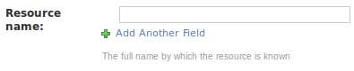

META-SHARE Provider Manual¶
A Network of Excellence forging the Multilingual Europe Technology Alliance
Authors: Victoria Arranz, Christian Federmann, Ioanna Giannopoulou, Olivier Hamon, Marc Schröder, Christian Spurk
Date: November 8, 2012
Contents
- META-SHARE Provider Manual
- Executive Summary
- User and Access Rights Management
- Provider-Oriented Documentation
- 4 Glossary
- Funding
Executive Summary¶
This document is a guide for those who are interested in providing Language Resources (LRs) with META-SHARE. It also explains user and access rights management of the META-SHARE web editor.
User and Access Rights Management¶
Version 3.0 of the META-SHARE web application introduced a fine-grained user and access rights management system which determines who may do what on a META-SHARE node. For example, LR providers have more rights than a normal user who just wants to download LRs, some non-provider users may be members of an organization which grants special download rights, etc.
This section describes the META-SHARE user and access rights management system.
Basic User Roles and Permissions¶
META-SHARE knows the following user roles:
- anonymous user: used for non-logged in users; no user account; may browse published LR descriptions and can download free LRs; can see node statistics.
- registered user: personalized user account tied to an e-mail address; in addition to the rights of an anonymous user, a registered user may also contact LR maintainers for obtaining LRs which are not freely downloadable; can apply for editor group membership and for organization membership.
- editor member: a registered user who is a member of one or more editor groups; may create his/her own LR descriptions and may upload smaller data files for them; may alter LR entries belonging to his/her editor group; may add owned resources to the editor groups (s)he is member of.
- editor group manager: a registered user who manages a certain editor group; may accept or turn down applications for the managed editor group; may ingest, publish, unpublish and delete LRs belonging to the managed editor group.
- organization member: a registered user who is member of an internally known organization; get the rights of the organization.
- organization manager: a registered user who manages an internally known organization; may add and remove registered users to/from the managed organization group.
- superuser: a registered user who implicitly has all possible permissions of the META-SHARE web application; a superuser account is usually created during the installation of a node; superusers are especially needed for creating editor groups, for making registered users editor managers, for creating organizations and for making registered users organization managers.
- node administrator: the person who administers the META-SHARE node installation; not a META-SHARE web application role but the administrator should have a superuser account; apart from the node installation, a node administrator may be needed for uploading larger LR data sets.
In addition, there are the following permissions which can be granted to a group or to individual user accounts:
- META-SHARE associate member: this permission currently has no effect in the META-SHARE web application, however, it is expected to have in the future.
- META-SHARE full member: this permission grants the right to freely download LRs with a META-SHARE Commons license.
Note: there are further permissions and a few more user roles in the META-SHARE software. For example, one or more sync user accounts are required for the node synchronization to work. These additional permissions and roles are considered to be internal, though: resource providers will not need to care about them and node administrators need only care where these roles and permissions are explicitly mentioned in the META-SHARE manuals.
Resource Ownership and Access¶
META-SHARE is all about LRs. Consequently, the META-SHARE Basic User Roles and Permissions are centered around creating, modifying, accessing and otherwise managing these LRs.
Resource Owners¶
A LR has zero or more owners, i.e., users who own the resource. The user who creates a LR is usually the first owner of a LR. Owned LRs are listed when going to “Manage Resources” → “Manage your own resources” in the web editor. Additional owners can be added on that page, too. Only superusers can withdraw LR ownership.
Owners may always edit their LRs, no matter if they are in an editor group of that LR (explained at Editor Groups for Resources) or not.
Editor Groups for Resources¶
A LR belongs to zero or more editor groups. As can be expected, editors of these editor groups may edit such LRs. The user who creates a LR determines what editor groups a LR gets by default (see below). Additional editor groups can be added on the “My Resources” page of the web editor (“Manage Resources” → “Manage your own resources”). Only superusers can remove editor groups from a LR again.
Every user can choose the editor groups that newly created LRs shall get by default. Only those editor groups can be chosen, of which the user is a member. The user profile page (“Your Profile” → “Edit your profile”) shows which editor groups these are (if any). Adding and removing default editor groups can be achieved via the “Add default editor groups” and “Remove default editor groups” menu items of the “Your Profile” menu in the web editor.
Managing User Accounts¶
The META-SHARE User Manual explains how web application users can register for a new user account. This section details how existing META-SHARE user accounts can be provided with the different roles that we introduced in Basic User Roles and Permissions.
Managing Editor Users¶
An editor user is a user who is member of one or more editor groups.
Creating and Managing Editor Groups¶
In a new META-SHARE installation there are no editor groups in the system at all. A superuser first has to create them. Whenever a new editor group is needed, it has to be created by a superuser.
You can ask the META-SHARE node superusers to create new editor groups by going to <META_SHARE_NODE_URL>/accounts/contact/ (e.g., http://metashare.dfki.de/accounts/contact/) and sending them a message.
To create or manage editor groups, choose “Editor groups” from the “Administration” menu of the web editor. Creating new editor groups can be accomplished with the “Add editor group” button in the top right corner of the “Select editor group to change” page. You basically only need to specify a meaningful name (such as “XYZ Corpus editors”) and then save.
Applying for Editor Group Memberships¶
Every registered user may apply for membership in one or more editor groups, i.e., for being an editor user. Such an application is possible from the “Your Profile” menu and then choosing the “Apply for editor group membership”. Editor group managers of the applied-for group and superusers will be notified of the application.
As an editor group manager (or superuser) you can accept or turn down an editor group membership application by first choosing “Editor group applications” from the “Administration” menu of the web editor. From the editor group application list choose the application that you would like to accept or to turn down. Choose the relevant action at the top of the list and click the “Go” button.
Directly Adding a User Account to an Existing Editor Group¶
Superusers can directly add existing user accounts to an editor group. To do this, go to the web editor and choose “Users” from the “Administration” menu. Click the user you would like to add to an existing editor group. At the bottom of the “Change user” page in the “Groups” section, select the editor group you would like the selected user to be a member of.
Before you save your changes, make sure that the user has “Staff status” in the “Permissions” section.
Removing Users from Editor Groups¶
Only superusers can remove users from editor groups. To do this, go to the web editor and choose “Users” from the “Administration” menu. Click the user you would like to remove from an editor group. At the bottom of the “Change user” page in the “Groups” section, deselect the editor group from which you would like to remove the selected user.
Managing Editor Group Managers¶
Only superusers can manage editor group managers. Technically, a manager for some editor group is a user who is member of a so-called “editor group managers group” which manages that editor group. Thus, before you can make a user an editor group manager, you have to have a corresponding editor group managers group.
To create a manager group, choose “Editor group managers” from the “Administration” menu of the web editor and then click the “Add editor group managers group” button in the top right corner of the page. You need to specify a meaningful name (such as “XYZ Corpus editor group managers”) and select the editor group that shall be managed by the new manager group. Then save.
To add members to a manager group, you can either use the same method as described in Directly Adding a User Account to an Existing Editor Group for editor groups. Or you can choose “Editor group managers groups” from the “Administration” menu of the web editor, then select the editor group managers groups to which you would like to add new members, then choose the “Add users to selected editor group managers” action, then click the “Go” button and on the following page choose the users that you would like to have as members of the selected manager groups.
To remove members from a manager group again, you can either use the same method as described in Removing Users from Editor Groups for editor groups. Or you can choose “Editor group managers” from the “Administration” menu of the web editor, then select the editor group managers groups from which you would like to remove members, then choose the “Remove users from selected editor group managers” action, then click the “Go” button and on the following page choose the users that you would like to not be members of the selected manager groups anymore.
Managing Organizations¶
Creating and Managing Organizations¶
In a new META-SHARE installation there are no organizations in the system at all. A superuser first has to create them. Whenever a new organization is needed, it has to be created by a superuser.
You can ask the META-SHARE node superusers to create new organizations by going to <META_SHARE_NODE_URL>/accounts/contact/ (e.g., http://metashare.dfki.de/accounts/contact/) and sending them a message.
To create or manage organizations, choose “Organizations” from the “Administration” menu of the web editor. Creating new organizations can be accomplished with the “Add organization” button in the top right corner of the “Select organization to change” page. You basically only need to specify a meaningful name (such as “ACME Corp.”) and then save; usually you will not want to change the preselected permissions except for the cases described in Granting Permissions or if you really know what you are doing.
Applying for Organization Memberships¶
Every registered user may apply for membership in one or more organizations. Such an application is possible from the “Your Profile” menu and then choosing the “Apply for organization membership”. Organization managers of the applied-for organization and superusers will be notified of the application.
As an organization manager (or superuser) you can accept or turn down an organization membership application by first choosing “Organization applications” from the “Administration” menu of the web editor. From the organization application list choose the application that you would like to accept or to turn down. Choose the relevant action at the top of the list and click the “Go” button.
Directly Adding a User Account to an Existing Organization¶
Superusers can directly add existing user accounts to an organization. To do this, go to the web editor and choose “Users” from the “Administration” menu. Click the user you would like to add to an existing organization. At the bottom of the “Change user” page in the “Groups” section, select the organization you would like the selected user to be a member of.
Removing Users from Organizations¶
Only superusers can remove users from organizations. To do this, go to the web editor and choose “Users” from the “Administration” menu. Click the user you would like to remove from an organization. At the bottom of the “Change user” page in the “Groups” section, deselect the organization from which you would like to remove the selected user.
Managing Organization Managers¶
Only superusers can manage organization managers. Technically, a manager for some organization is a user who is member of a so-called “organization managers group” which manages that organization. Thus, before you can make a user an organization manager, you have to have a corresponding organization managers group.
To create a manager group, choose “Organization managers” from the “Administration” menu of the web editor and then click the “Add organization managers group” button in the top right corner of the page. You need to specify a meaningful name (such as “ACME Corp. managers”) and select the organization that shall be managed by the new manager group. Then save; usually you will not want to change the preselected permissions except for the cases described in Granting Permissions or if you really know what you are doing.
To add members to a manager group, you can either use the same method as described in Directly Adding a User Account to an Existing Editor Group for editor groups. Or you can choose “Organization managers” from the “Administration” menu of the web editor, then select the organization managers groups to which you would like to add new members, then choose the “Add users to selected organization managers” action, then click the “Go” button and on the following page choose the users that you would like to have as members of the selected manager groups.
To remove members from a manager group again, you can either use the same method as described in Removing Users from Editor Groups for editor groups. Or you can choose “Organization managers” from the “Administration” menu of the web editor, then select the organization managers groups from which you would like to remove members, then choose the “Remove users from selected organization managers” action, then click the “Go” button and on the following page choose the users that you would like to not be members of the selected manager groups anymore.
Managing Superusers¶
In most cases it will probably suffice to have the single superuser account which was created during the installation of your META-SHARE node. However, if you should still want to grant further user accounts superuser permissions, you can proceed as follows: as a superuser, go to the web editor and choose “Users” from the “Administration” menu. Click the user whom you would like to make a superuser. On the “Change user” page in the “Permissions” section, make sure that “Superuser status” is activated and “Save”.
With the above procedure, the chosen user account will implicitly be granted all available permissions. You should never manually assign all permissions to a user account in order to make it a superuser; while this may partly give you the desired results, it will certainly not work in general.
Granting Permissions¶
Permissions are very fine-grained flags which control what users and groups may or mustn’t do in the META-SHARE web application. Only superusers can manage permissions. However, when using the mechanisms described in Managing User Accounts, you will usually not need to care about permissions at all – with one exception: META-SHARE memberships. Aside from META-SHARE memberships you should usually never change any of the built-in permissions – unless you really know what you are doing.
At some point you may want to make single users or organizations META-SHARE members. As noted in Basic User Roles and Permissions, META-SHARE membership is controlled with two permissions (“META-SHARE associate member” and “META-SHARE full member”. To grant one of these permissions to a single user, go to the web editor and choose “Users” from the “Administration” menu. Click the user whom you would like to give the permission. On the “Change user” page in the “Permissions” section, make sure that either the “accounts | user profile | Is a META-SHARE associate member.” permission or the “accounts | user profile | Is a META-SHARE full member.” permission is selected. Then save.
To grant one of the permissions to a group of users (usually to an organization), go to http://<YOUR_NODE>/editor/auth/group/ of the web editor and click the group to which you would like to give the permission. On the “Change group” page under “Permissions”, make sure that either the “accounts | user profile | Is a META-SHARE associate member.” permission or the “accounts | user profile | Is a META-SHARE full member.” permission is selected. Then save.
Provider-Oriented Documentation¶
Add a Language Resource¶
An editor user can add a new LR by inserting the metadata that describes this LR. The editor user must be registered and logged in so as to add new LRs, and then do as follows:
- Click on the “Manage Resources” button in the top menu, then “Manage your own resources”.
- In the result page, click on the “Add Resource” button at the top right corner of the page (see Figure 1). From the drop-down menu that appears, click on “Resource”. The result page presents a drop-down menu, listing all the available resource types (see Figure 2).
Figure 1: META-SHARE backend for resource providers
Figure 2: Choose one of the available resource types
Choose a resource type for the LR (a LR can only have one resource type). If your choice is “tool / service”, go directly to step 4. If your choice is of the other three resource types, select from the appearing check-box list, the media type(s) for the LR (see Figure 3).
Note: In the case of “lexical conceptual resource” and “language description” resource types, “text” is a required media type and, as such, it is selected by default and cannot be unselected.
Click on the “proceed” button.
In the result page (see Figures 4 & 5), all the metadata information to be filled in, is summarized under a left hand side menu (see Metadata Fields for the description of the metadata fields). On the top of this menu, there is the administrative information categorized as required, recommended and optional, if any. A click on any of these options, will lead in expanding the appropriate metadata block on the right hand side.
Figure 3: Choose media types for the selected resource type
Figure 4: Administrative Information metadata block (Required)
Figure 5: Administrative Information metadata block (Recommended)
- Fill in the administrative metadata fields (Only the required information -appearing as bold- is necessary for a LR to be successfully saved).
On the same level of the left hand side menu as the administrative information, there are the resource-type-specific information. Clicking on one of these, will lead in opening a pop-up window, containing the blocks of metadata to be filled in (see Figure 6 for an example). These pop-up windows follow a similar menu structure (required / recommended / optional) as the main page.
Figure 6: Resource-type-specific pop-up window (here for a Lexical-Conceptual Resource)
- For each one of the pop-up windows, fill in the metadata fields (again, only the required information is necessary for a LR to be successfully saved). Once done with filling in information within a pop-up window, click on the “Save” button at the bottom of the page. In case of errors, a message will be displayed on the top of the page, the errors will be reflected on the menu options and the problematic fields (i.e., fields which either contain an error or are empty) will be highlighted in red (see Figure 7 for an example). If there are no errors, the “Save” button will close the pop-up window, returning to the previous page.
Figure 7: Errors in pop-up window: the media field has not been filled-in
- Once done with filling in information both in the main page and in all the pop-up windows, click on the “Save” button at the bottom of the main page. If there are errors, they will be indicated in a similar way as in the pop-up windows (see Figure 8 for an example). If there are no errors, clicking on “Save” will result in a new page, displaying the message “The Resource ‘resource name’ was added successfully”, and listing all the LRs added in META-SHARE, included the newly created one (see Figure 9).
Figure 8: Errors in main page: the resource name and the description have not been filled-in, errors also in General Info and Text Info tabs
Figure 9: Successfully saved LR
Edit Language Resources¶
As described in Basic User Roles and Permissions, an editor user can edit all LRs within the specific META-SHARE node which he owns or which belong to the editor group of which (s)he is a member. In the menu, the editor user can click on the “Manage Resources” button, where (s)he can view a list of all the LRs / Person / Organizations / Projects / Documents for the specific META-SHARE node. The editor user can also click on the “My Resources” link, where (s)he can only view a list of the LRs (s)he has provided on META-SHARE himself (or more precisely: the LRs of which (s)he is set as an owner).
If the provider wishes to edit a LR, (s)he can click on its name. This will result in a page where all the metadata fields can be edited for this resource, which will appear in exactly the same view as described in Add a Language Resource.
Add Other Metadata Entities¶
As shown in Figure 1, the editor user has a choice of creating other entities as well. The point of creating these types of metadata (namely Person, Organization, Project, Document) apart/independently from a resource, is that they can be reused in many LR descriptions. So, if for example a provider creates a project description first, then all (s)he has to do when creating a LR description, is to select the project from the list of existing projects, instead of creating it from scratch.
Manage Language Resources¶
An editor group manager can delete, ingest, publish and unpublish all LRs that belong to his managed editor group. He can select the LRs to which (s)he wishes to apply one of these actions and then select an action from the drop-down menu of actions (delete, publish, unpublish or ingest). Clicking on the “Go” button will execute the selected action.
Export LR Descriptions to XML¶
An editor user is able to export the description of a LR to META-SHARE XML format. One way of performing the exporting is through the “export” action on the Update page for one or more LRs – as described in the previous section. Another way of exporting is through the metadata editing page, by clicking on the relevant button on the top right of the page (see Figure 10).
Figure 10: Exporting a LR description to XML
Details of Adding and Editing Metadata Information¶
Metadata information for LRs are organised in two levels, the first being Administrative / Type-specific, and the second being required / recommended / optional.
Metadata Fields¶
The tabbed menu described in Add a Language Resource shows the two levels (see Figures 2, 3 & 4). A description of the metadata fields follows:
- Common fields:
- Administrative
- Required: contains information on identification, distribution, contact person, metadata of the resource, etc.
- Recommended: contains information on version/release, validation, usage, documentation, creation, relations of the resource, etc.
- Administrative
- Resource type: Corpus
- Corpus Text Info: Information on the text component of the resource, such as the language, the text format, the encoding, the annotation, etc.
- Corpus Audio Info: Information on the audio component of the resource, such as the language, the audio format, the size, the recording, the capture, etc.
- Corpus Video Info: Information on the video component of the resource, such as the size, the video format, the content, the language, etc.
- Corpus Image Info: Information on the image component of the resource, such as the size, the image format, the content, etc.
- Corpus Text Numerical Info: Information on the numerical text component of the resource, such as the size, the content, the creation, etc.
- Corpus Text n-gram Info: Information on the text n-gram component of the resource, such as the base item (word, syllable, letter, etc.), the language, the size, the text format, the encoding, etc.
- Resource type: Language Description
- Language Description General Info: Information on the specific type of the resource (e.g. grammar), the encoding, the performance, etc.
- Language Description Text Info: Information on the text component of the resource, such as the language, the linguality (monolingual, bilingual, etc.), the text format, the encoding, the size, etc.
- Language Description Video Info: Information on the video component of the resource, such as the creation, the size, the content, the video format, the language, etc.
- Language Description Image Info: Information on the image component of the resource, such as the creation, the size, the content, the image format, etc.
- Resource type: Lexical Conceptual Resource
- Lexical Conceptual Resource General Info: Information on the specific type of the resource (thesaurus, terminology, etc.), the encoding, as well as further details about the creation of the resource.
- Lexical Conceptual Resource Text Info: Information on the text component of the resource, such as the languages, the linguality (monolingual, bilingual, etc.), the text format, the encoding, the size, etc.
- Lexical Conceptual Resource Audio Info: Information on the audio component of the resource, such as the size, the audio format, the content, the language, etc.
- Lexical Conceptual Resource Video Info: Information on the video component of the resource, such as the video content, the size, the video format, the language, etc.
- Lexical Conceptual Resource Image Info: Information on the image component of the resource, such as the image format, the size, the content, etc.
- Resource type: Tool / Service
- Tool / Service Info: Information on the specific type of the resource (tool, service, platform, infrastructure, etc.), details about the input and output types, information on the operating systems and running environments, etc.
Note: All these fields are divided in blocks required / recommended / optional.
Input Types¶
In order to insert or modify metadata, the web application provides different kinds of input types:
- Text field: the editor user may add/modify free text that corresponds to the description of the metadata elements;
- Drop-down list box: the editor user may choose one item from the list provided;
- Multiple-choice Drop-down list box: the provider may chose one or several items from the list provided;
- Repeatable text field: the editor user may add or delete all the text field he wants to by clicking on the “+” or “x“ buttons, respectively.
- Calendar text field: the editor user may write a full date on his own or select a date from a pop-up calendar.
All fields are accompanied by a short description/explanation line, as shown below:
Import Language Resources¶
Prepare the Import File¶
To be able to import new LRs, the user must first create XML metadata files for each LR, that follow the META-SHARE metadata XML Schema. This compliance can be validated using the META-SHARE XML Schema (XSD); the current version can be found in the misc/schema/v3.0 folder.
Upload Using the Import Script¶
The META-SHARE node administrator (cf. Basic User Roles and Permissions) may import XML metadata from the command line using the import_xml.py script which can be found within the metashare installation folder. Basic usage information is given when called without any arguments:
$ python import_xml.py
usage: import_xml.py [--id-file=idfile] <file.xml|archive.zip> \ [<file.xml|archive.zip> ...]
--id-file=idfile : print identifier of imported resources in idfile
The script reports errors and gives import statistics when finished. A single XML file can be imported as follows:
$ python import_xml.py my_LR.xml
Done. Successfully imported 1 files into the database,
errors occurred in 0 cases.
Multiple LRs can be imported using the “*” wildcard or by packaging the xml file into a zip file:
$ python import_xml.py metashare-v1-resources.zip
Done. Successfully imported 1,277 files into the database,
errors occurred in 0 cases.
Importing a large zip file, or a large amount of XML files, takes some time; this is normal. The last line of the import_xml.py output should report no errors. After successful import of these files, the new resources should be available on the META-SHARE node.
Upload Using the Web Interface¶
An editor user can upload an XML metadata file by clicking on the “Upload” link at the top left of the “META-SHARE backend for resource providers” page. Uploading works as follows:
- Choose a file by clicking on the “Browse button”;
- Click on “Upload Terms” check-box to accept them;
- Click on the “Upload” button.
Conversion of Existing LRs¶
The conversion of the existing LRs from several different XML schema to META-NET XML schema has been made with XSL transformations.
The process was the following:
- The first step was to map all the elements of the other XML schema to the elements of META-NET XML schema, one by one.
- Then, an XSL file was created, which contains the structure of META-NET XML schema, and XSLT lines harvesting the information from the files of the other XML schema format.
- The conversion process was executed for all given files.
Example:
Element resource_periodofcoverage from ELRA format has been mapped to timeCoverage element in META-SHARE schema format.
Line in ELRA XML file:
<resource_periodofcoverage>Between 1992 and 1999</resource_periodofcoverage>
XSL conversion file:
<xsl:variable name='time' select='preceding-sibling::resource_periodofcoverage'/>
<xsl:if test='$time!=""'>
<timeCoverageInfo>
<timeCoverage>
<xsl:value-of select='$time'/>
</timeCoverage>
</timeCoverageInfo>
</xsl:if>
Lines in final META-SHARE XML file:
<timeCoverageInfo>
<timeCoverage>Between 1992 and 1999</timeCoverage>
</timeCoverageInfo>
In the example above, the element “timeCoverage” is part of the meta-share XML structure. The content inside the element is added by the line <xsl:value-of select='$time'/>, where $time is a XSL variable, defined before, as the (xpath) preceding-sibling with the name resource_periodofcoverage. If the variable is empty, the element does not appear in the final XSL file.
This is the way to construct, little by little, a META-SHARE compliant XML file.
For the conversion, there are many things that need to be taken into account, such as mandatory fields, unique fields, repeated fields, elements that have the enumeration constraint (i.e., that can only contain a value from a set of acceptable values), etc. Thus, the conversion files may contain far more complicated transformations than the one displayed before.
Due the complexity of the META-SHARE schema and the significant differentiation between this and the other formats, some tools and mechanisms were used to simplify the conversion process.
In the case of ILSP and PSP resources conversion, the tool Altova-MapForce was used for the mapping between schemata and the production of the XSL files. Yet, there were quite a few cases where the automatically produced files had to be manually edited in order to fully comply with META-SHARE schema.
In the case of ELRA resources conversion, there was a pre-conversion stage, where the ELRA format files were converted in simple XML flat list files, with the following format:
<resource id="1">
<resource_id>1</resource_id>
<resource_reference>ELRA-S0148</resource_reference>
…
</resource>
<resource id="2">
…
Files with this format were the input to the XSL file that were converted in META-SHARE format. The tool Altova-MapForce, facilitated here as well the mapping process.
Add Downloadable Content to Resources¶
Each META-SHARE resource can contain downloadable content. At the moment, it is possible to add exactly one archive file to a resource. Its name is fixed to archive.{'zip', 'tar.gz', 'gz', 'tgz', 'tar', 'bzip2'}.
After upload, the archive.ext, where .ext will be the file extension of the original file, will be placed inside the dedicated storage folder of the resource: each StorageObject has a local folder attached to it which is used to store associated downloadable data.
Adding Downloadable content¶
There are two ways of adding downloadable content to an existing META-SHARE resource:
- Upload via the web interface (for editor users), or
- Upload using the command line storage_admin.py script (for node administrators only)
Upload via the Web Interface¶
To upload data via the Web Interface, the provider has to go to the META-SHARE web editor page for an existing resource. It is not possible to upload files for new LRs. On the top-right of the browser window, there is a button “Upload Data” next to “Export Resource Description to XML”.
Clicking the “Upload Data” button will load an upload page for the current LR.
Figure 11: Upload data for a LR
The “Path” information is displayed for convenience and allows to quickly retrieve the file system path of the StorageObject‘s downloadable content.
Both fields are required. In case the provider attempts to upload without having filled them in, the fields are highlighted in red, with the message “This field is required”.
Figure 12: Required fields for the upload
Note: It is required to click the “Upload Permission?” check-box to verify that the editor user accepts liability for the file he intends to upload. The editor user should only upload an archive to a META-SHARE resource if he is allowed to do so; if not, it is better to ask the original owner of the resource to do so.
Once the upload is successful, the file is copied to the StorageObject‘s storage folder as archive.ext (see above). The user gets redirected to the editor page for the current resource, i.e., the page where he started the upload process.
Limitation: The web interface upload page only allows files smaller than MAXIMUM_UPLOAD_SIZE = 1 * 1024 * 1024 bytes to be uploaded. This is a robustness fix which ensures that the web editor page does not crash due to a very large file being uploaded. Upload Using the Command Line storage_admin.py Script offers a solution for uploading larger files.
Upload Using the Command Line storage_admin.py Script¶
When you need to add a large file as downloadable content to an existing resource, the node administrator can use the storage_admin.py script, which is available within the metashare/ folder.
If called without arguments, the script provides an overview on available options:
metashare $ python2.7 storage_admin.py
usage: storage_admin.py MODE ARGS...
MODE = [purge, checksum, folder, help]
Use storage_admin.py help MODE for detailed usage instructions.
To add a large file as downloadable content, you simply have to manually copy it over to the storage folder belonging to the resource. The storage folder path can be found in the web interface upload view (see Upload via the Web Interface).
Once having copied a file named archive.ext to the storage folder path, you have to update the file checksum to “activate” the new downloadable content. This is the relevant usage of storage_admin.py:
metatashare $ python2.7 storage_admin.py checksum <storage-object-id>
...
Checksum: d41d8cd98f00b204e9800998ecf8427e
You obtain the <storage-object-id> from the last bit of the storage folder path: the ID is a 64-char hexadecimal String, e.g., c0b9a36b50ce11e1a4570017f20dda8ac8066602350044549d62c1bdb750883c.
If no file archive.ext can be found within the storage folder for <storage-object-id> the storage_admin.py script will return Checksum: None.
Known Limitations¶
It is mandatory to follow the naming scheme. The provider has to make sure that the downloadable data is contained within one archive file. This file needs to have one of the following, allowed extensions (as defined in storage/models.py):
ALLOWED_ARCHIVE_EXTENSIONS = ('zip', 'tar.gz', 'gz', 'tgz', 'tar', 'bzip2')
4 Glossary¶
Ingest: Within the META-SHARE context, ingesting a LR into the database is a one-time, irreversible step. It is preceded by a phase of editing an “internal” LR, visible only to the LR owners and to the members of the editor group of the LR. Once the decision is taken that the metadata for a particular LR is “ready” to make the entry more widely visible, the provider “ingests” the LR into the database. An ingested LR is still visible only in the web editor. Ingested LRs are synchronized to other META-SHARE nodes.
Media types: Within the META-SHARE context, the media types of a LR depend on its resource type. Thus, a Corpus LR can contain one or more of the following media types: text, audio, video, image, text-numerical and text-ngram. A Lexical-Conceptual Resource must contain a text media type and can also contain audio, video and image media types. A Language Description LR must contain a text media type and can also contain video and image media types. A Tool/Service does not contain any media types.
Metadata: All the information that describes a given LR. Within the META-SHARE context, metadata can describe all different aspects of a LR, varying from details on the creation of the LR, to content or language or size information.
Publish: Within the META-SHARE context, publishing a LR means making it visible to all META-SHARE users, registered and anonymous.
Resource type: Within the META-SHARE context, the resource type of a LR has to be strictly one of the following:
- Corpus
- Lexical-Conceptual Resource
- Language Description
- Tool / Service
Unpublish: Within the META-SHARE context, unpublishing a LR means making it visible only to META-SHARE editors.
XML metadata file: A XML format file that contains metadata on a LR.
XML Schema (XSD): An XML Schema is a description of a specific XML type of files. It contains the structure that these XML files should have, along with all the constraints that should be respected so that the XML files are valid, such as the uniqueness of elements, the specific values that elements should contain etc.